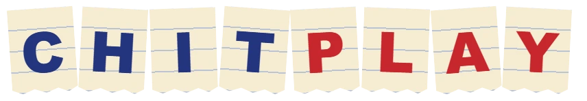
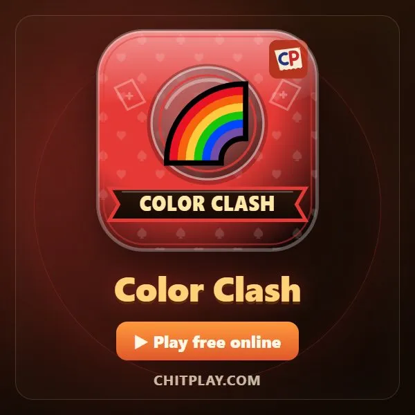
কালার ক্ল্যাশ (Color Clash)
- 👥 2–4 খেলোয়াড়
- তাসের গেম
- 🆓
বাংলা গাইড
রং বা সংখ্যা মেলান, +২ আর রংধনু +৪ খেলুন, আগে তাস শেষ করুন।
English name: Color Clash
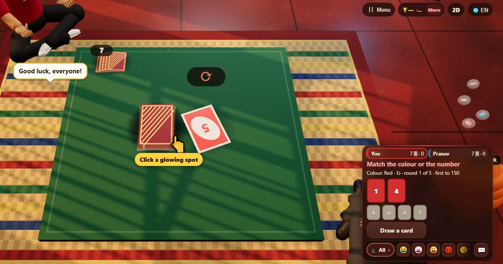
কীভাবে খেলবে
- সবাই সাতটা করে তাস পায়। একটা তাস দিয়ে স্তূপ শুরু হয়।
- নিজের দানে উপরের তাসের সঙ্গে রং, নম্বর বা চিহ্ন মেলে এমন তাস দাও।
- স্কিপ (⊘) পরের জনকে বাদ দেয়। রিভার্স (⇄) দিক উল্টায়; দুজনে স্কিপের মতো। +2 পরের জনকে দুটো তাস তোলায় আর দান কেড়ে নেয়।
- রেইনবো তাস যেকোনো তাসে দেওয়া যায় আর পরের রং তুমি বাছো। রেইনবো +4-ও তাই, আর পরের জন চারটে তোলে আর দান হারায়।
- দেওয়ার কিছু নেই? একটা তাস তোলো। মিললে দিতে পারো, না মিললে পাস।
পয়েন্ট কীভাবে মেলে
যার তাস শেষ, সে বাকিদের হাতে থাকা তাসের পয়েন্ট পায়: নম্বর তাস তার মান, অ্যাকশন তাস 20, রেইনবো তাস 50।
কে জেতে
যে আগে 150 পয়েন্টে পৌঁছায় সে জেতে। পাঁচ রাউন্ডে কেউ না পৌঁছালে সবচেয়ে বেশি স্কোর জেতে।
সাধারণ প্রশ্ন
কালার ক্ল্যাশ কি অন্য রঙের তাসের খেলার মতো?
এটা মেলানোর তাসের খেলার সেই একই পরিবারের, কিন্তু তাস, নাম আর স্কোরিং আমাদের নিজের।
কতজন খেলতে পারে?
দুই থেকে চার। খালি সিট কম্পিউটার ভরায়, অনলাইনেও।
+2 কি জমানো যায়?
সাধারণ খেলায় না: পরের জন তাস তোলে আর দান হারায়। খেলার আগে জমানো নিয়ম চালু করলে নিজের +2 বা +4 দিয়ে এগিয়ে দিতে পারো।
কীভাবে খেলবেন
- অতিথি হিসেবে: রেজিস্ট্রেশন নেই, লগইন নেই। নাম বেছে নিয়ে এখনই খেলুন।
- কম্পিউটারের সাথে: কেউ না থাকলে খালি জায়গা কম্পিউটার খেলোয়াড় পূরণ করে। সহজ, স্বাভাবিক বা কঠিন।
- অনলাইনে: সারা বিশ্বের খেলোয়াড়দের খোলা টেবিলে বসুন।
- কাছের বন্ধুদের সাথে: একটা ফোনে গেম শুরু করে কোড বা QR কোড পাঠান। বন্ধুরা নিজের ফোন থেকে যোগ দেয়।
- একটা ফোনে: পালা করে ফোন হাতবদল করুন: পুরো পরিবারের জন্য একটা ফোনই যথেষ্ট।
অন্য ভাষা
- हिन्दी: कलर क्लैश
- Hinglish: Color Clash
- Español: Color Clash
- Português: Color Clash
- Français: Color Clash
- Deutsch: Color Clash
- Bahasa Indonesia: Color Clash
- Türkçe: Color Clash
- Italiano: Color Clash
- 日本語: カラークラッシュ
- 한국어: 컬러 클래시
- 中文: 颜色大战
- Русский: Цветная битва
- اردو: کلر کلیش
- नेपाली: कलर क्ल्यास
- English: Color Clash · পুরো নিয়ম (ইংরেজি)
সব গেম
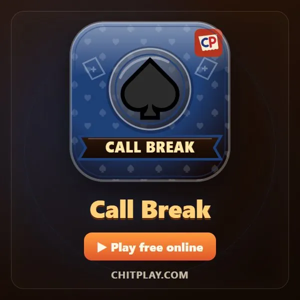
কল ব্রিজ (কল ব্রেক)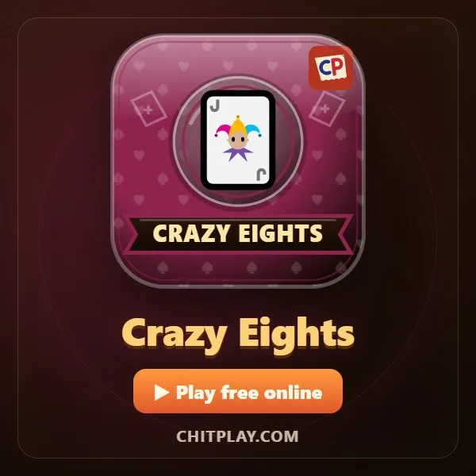
ক্রেজি এইটস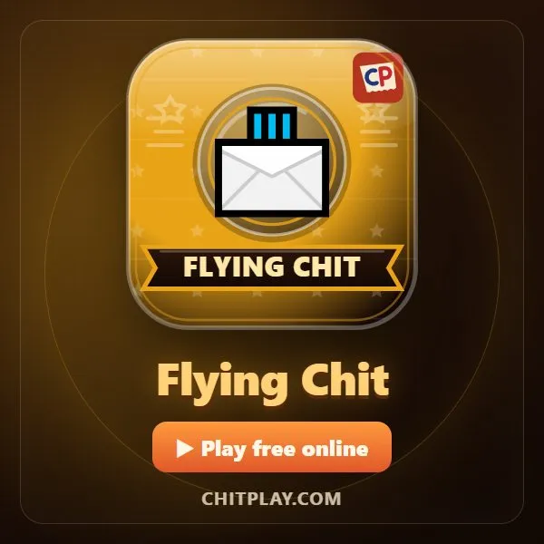
উড়ন্ত চিরকুট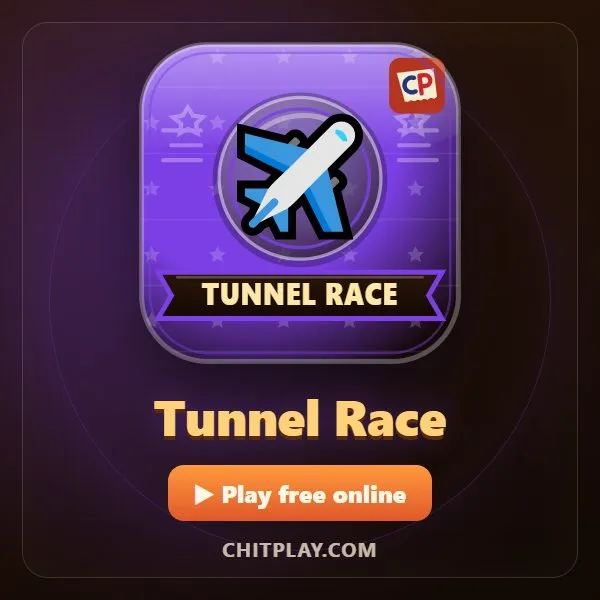
সুড়ঙ্গ রেস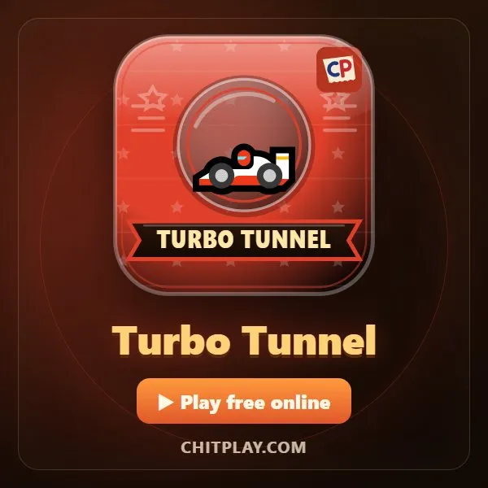
টার্বো টানেল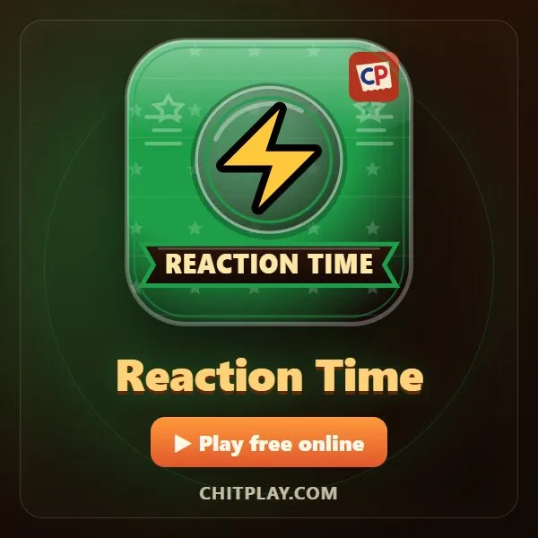
রিঅ্যাকশন টাইম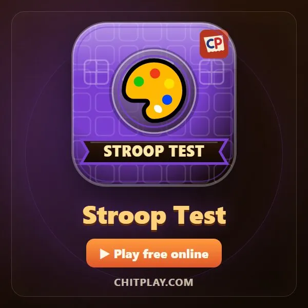
স্ট্রুপ টেস্ট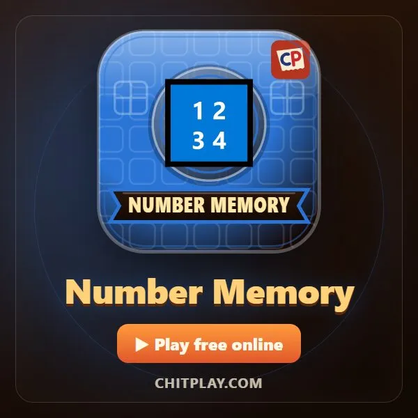
নম্বর মেমোরি
ChitPlay-তে আসল টাকা, বাজি বা পুরস্কার নেই। পয়েন্টের কোনো মূল্য নেই।